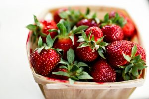

Dutch oven pancakes with fresh strawberries
These pancakes look very impressive and are deceptively easy to make although you do need a blender. Dutch oven pancakes differ from regular pancakes in that you bake your batter and, in the process, they puff up huge like a soufflé. You end up with a sweet and salty, crispy yet chewy, airy pillow. This recipe calls for making small cups by using a muffin pan, but you can also make one giant pancake by baking the batter in a cast iron skillet. Get as many organic ingredients from this list as you can!

Equipment
- Blender (you can mix by hand in a bowl if you don't have a blender)
- Muffin pan or cast iron skillet
Ingredients
- 3 large eggs (or 4 medium)
- 3/4 cups of milk
- 3/4 cups of all-purpose flour
- 1/2 tsp salt
- Butter
- Fresh strawberries, thoroughly washed
- Sugar
- Maple syrup
Cooking Directions
- Preheat the oven to 400°F
- Put the eggs into a blender and blend for about 30 seconds.
- Add the milk and blend together.
- Add the flour and salt and blend on high until mixed and frothy.
- Let the batter rest for a few minutes.
- Put a small piece of butter in the bottom of each muffin cup and place in the oven.
- When the butter has melted and just starts to foam*, remove the muffin pan from the oven and fill each muffin cup about 2/3 full with pancake batter. *The butter needs to be at the point of foaming. This indicates the pan is hot enough. If it's too cool, then the pancakes won't rise.
- Return the pan to the oven and bake for about 12-15 minutes or until they are puffed up and golden. If making a single pancake in a cast iron skillet it may 20-25 minutes to turn golden brown.